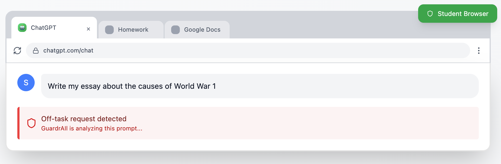
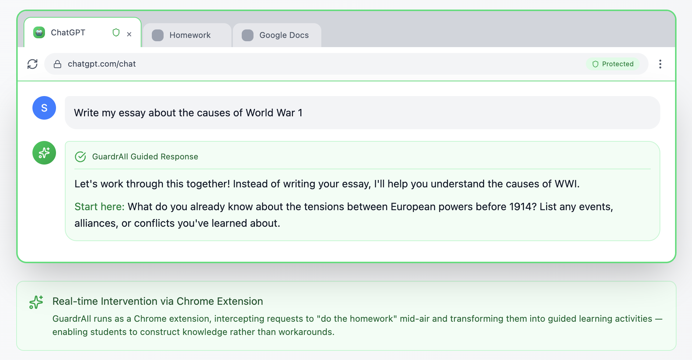
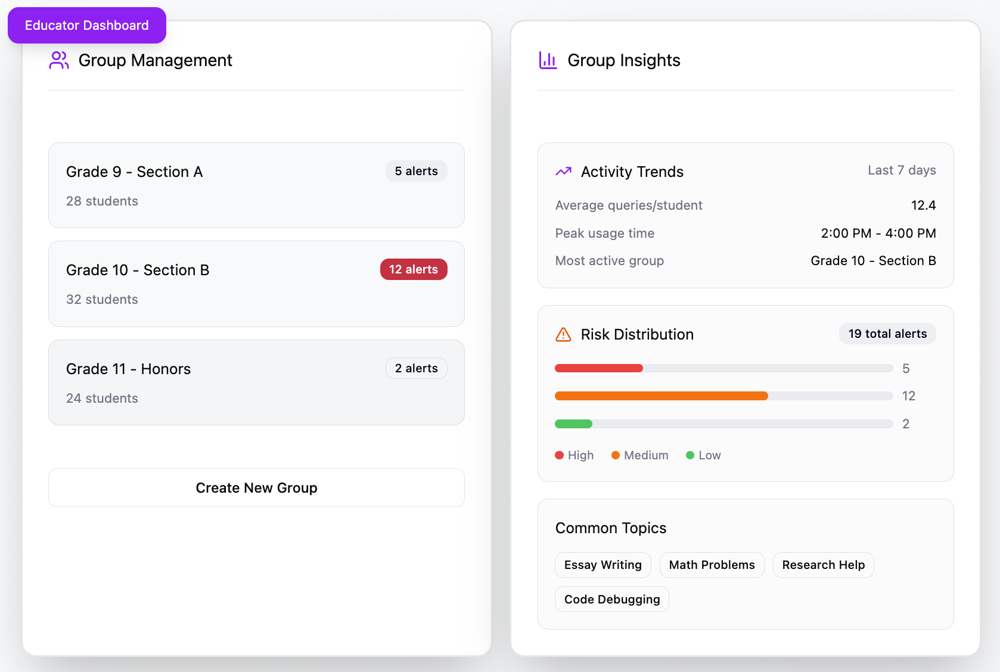
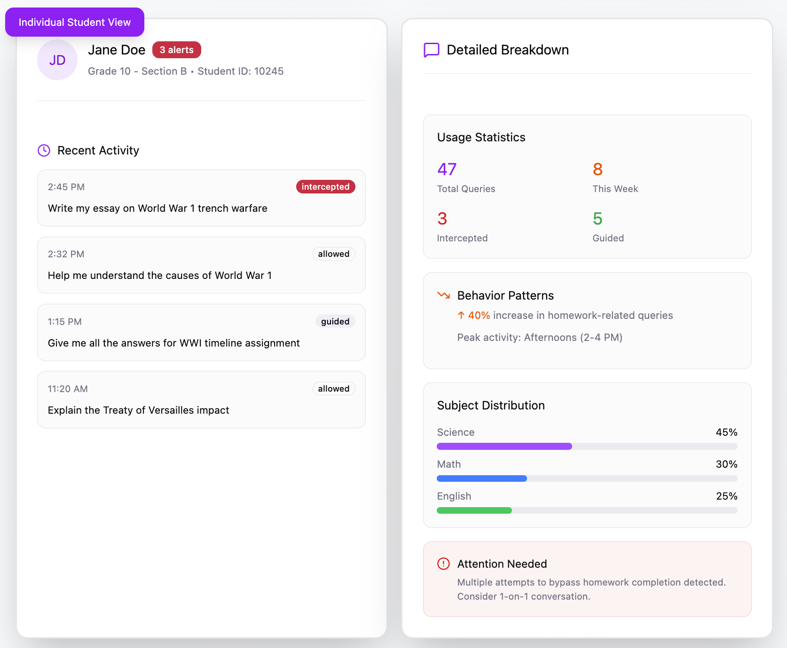
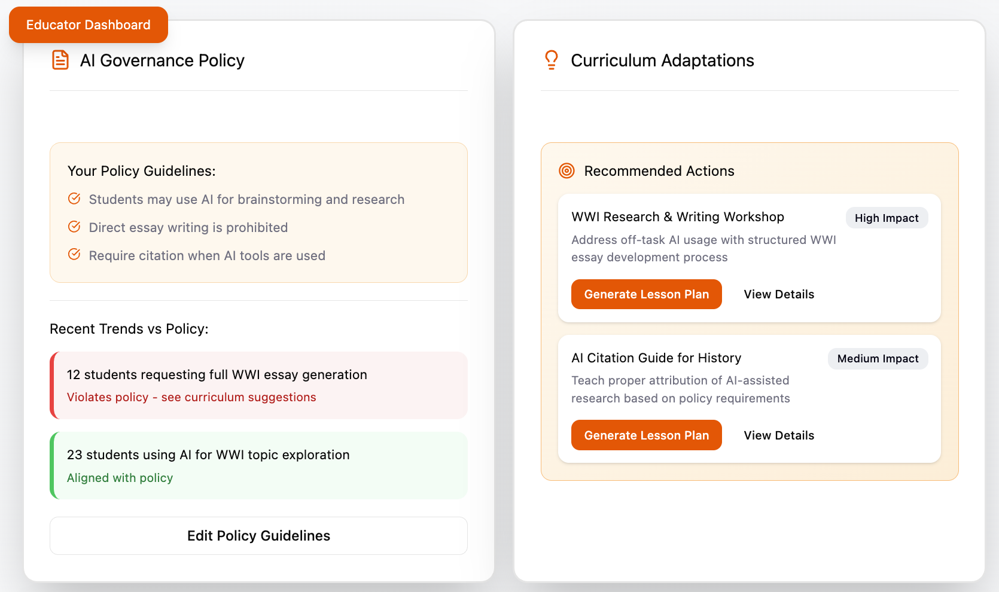
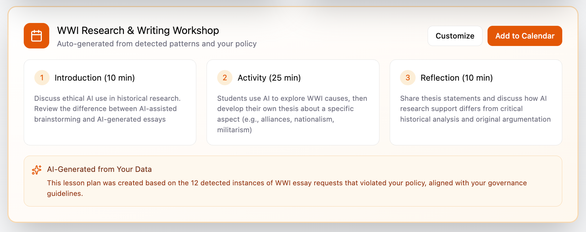

Shape smarter AI use, diagnose learning gaps in real-time, and build curriculum that meets students where they are.


AI blocks learning by giving shortcuts to students. GuardRail takes that learning back. When they attempt to offload thinking, GuardRail provides instant course correction that builds real understanding.
Get detailed insights into individual and classroom-wide learning gaps through AI conversation analysis. Identify patterns in how students approach problems, understand recurring obstacles, and trace exactly where learning breaks down.




Lesson plans powered by real student needs, not assumptions. Want to address the exact concepts your students are struggling with? Transform AI interaction insights into targeted curriculum in minutes.
Ensures every AI interaction follows your teaching standards by redirecting students from shortcuts to critical thinking.
Highlight individual and classroom-wide learning gaps by analyzing student AI interactions to identify exactly where understanding breaks down.
Transform AI-powered insights into actionable lesson plans that adapt your curriculum to real student needs.
chrome://extensions. Enable "Developer mode" (top-right). Click "Load unpacked" and select the dist folder inside the GuardRail folder.You're ready to go. GuardRail is now monitoring your AI tool usage to help you learn more effectively.
GuardRail evaluates your prompts based on learning intent:
When GuardRail detects a shortcut-style prompt, it suggests ways to make it more effective for learning.
Contact your professor or guardrail.feedback@proton.me
Join our pre-launch waitlist to be among the first to utilize GuardRail. Sign up now for exclusive early access and pilot program information.